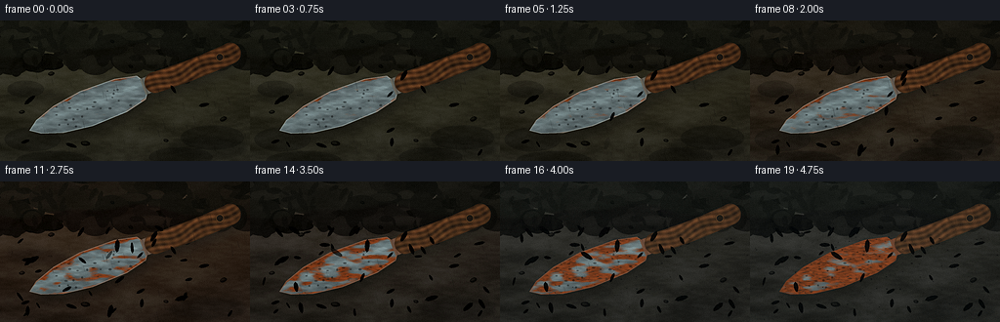
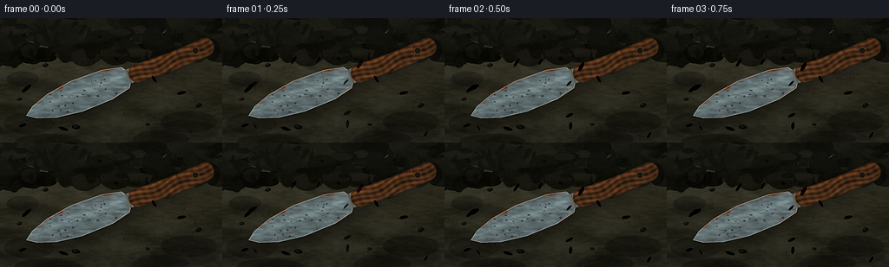
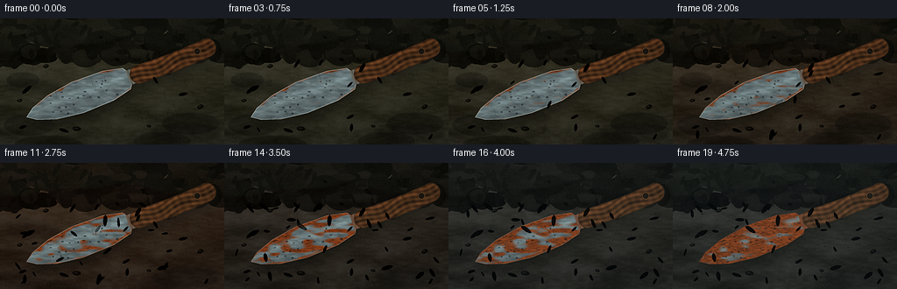

CODING AGENTS AS PIXEL WORLD MODELS
traex/DeepSeek-V4.1-Flash · material_0045
点击播放 · 原生 RGB 像素
逐轮保存的候选
回放视频、检查图与代码变化。
每份候选均可单独播放。实际图片检查记录在下方工具轨迹中。
候选 01播放与检查图
点击播放 · 原生 RGB 像素


展开代码变化
--- 上一保存版本
+++ 本次保存版本
@@ -0,0 +1,650 @@
+from __future__ import annotations
+
+import math
+from pathlib import Path
+
+import cv2
+import numpy as np
+from PIL import Image, ImageChops, ImageDraw, ImageEnhance, ImageFilter
+
+import artifact_io
+
+
+ROOT = Path(__file__).resolve().parent
+WIDTH, HEIGHT = 256, 144
+SCALE = 4
+WW, HH = WIDTH * SCALE, HEIGHT * SCALE
+FRAMES = 20
+FPS = 4.0
+
+
+def clamp(value, low=0.0, high=1.0):
+ return np.clip(value, low, high)
+
+
+def smoothstep(edge0, edge1, value):
+ value = clamp((value - edge0) / (edge1 - edge0))
+ return value * value * (3.0 - 2.0 * value)
+
+
+def mix(a, b, amount):
+ return np.asarray(a, dtype=np.float32) * (1.0 - amount) + np.asarray(b, dtype=np.float32) * amount
+
+
+def color(value):
+ return np.asarray(value, dtype=np.float32)
+
+
+def noise_field(seed, cells=(14, 25), blur=0.0):
+ rng = np.random.default_rng(seed)
+ data = (rng.random((cells[1], cells[0])) * 255).astype(np.uint8)
+ image = Image.fromarray(data).resize((WW, HH), Image.Resampling.BICUBIC)
+ if blur:
+ image = image.filter(ImageFilter.GaussianBlur(blur))
+ return np.asarray(image, dtype=np.float32) / 255.0
+
+
+def mask_draw(draw_function, blur=0.0):
+ image = Image.new("L", (WW, HH), 0)
+ draw_function(ImageDraw.Draw(image))
+ if blur:
+ image = image.filter(ImageFilter.GaussianBlur(blur))
+ return np.asarray(image, dtype=np.float32) / 255.0
+
+
+def rgba_overlay(draw_function):
+ layer = Image.new("RGBA", (WW, HH), (0, 0, 0, 0))
+ draw_function(ImageDraw.Draw(layer))
+ return np.asarray(layer, dtype=np.float32) / 255.0
+
+
+def over(image, overlay):
+ alpha = overlay[..., 3:4]
+ return image * (1.0 - alpha) + overlay[..., :3] * alpha
+
+
+def shift_mask(mask, dx, dy):
+ image = Image.fromarray((clamp(mask) * 255).astype(np.uint8))
+ return np.asarray(ImageChops.offset(image, dx, dy), dtype=np.float32) / 255.0
+
+
+def transformed_point(u, v):
+ origin_x, origin_y = 120.0, 451.0
+ angle = math.radians(-21.0)
+ return (
+ origin_x + u * math.cos(angle) - v * math.sin(angle),
+ origin_y + u * math.sin(angle) + v * math.cos(angle),
+ )
+
+
+def transformed_polygon(points):
+ return [transformed_point(u, v) for u, v in points]
+
+
+def rotated_ellipse(draw, cx, cy, rx, ry, angle, fill, outline=None, width=1):
+ points = []
+ ca, sa = math.cos(angle), math.sin(angle)
+ for i in range(28):
+ theta = 2.0 * math.pi * i / 28
+ px, py = rx * math.cos(theta), ry * math.sin(theta)
+ points.append((cx + px * ca - py * sa, cy + px * sa + py * ca))
+ draw.polygon(points, fill=fill, outline=outline, width=width)
+
+
+def draw_leaf(draw, cx, cy, length, width, angle, fill, outline, alpha=235, vein=True):
+ ca, sa = math.cos(angle), math.sin(angle)
+ local = [
+ (-0.50, 0.00),
+ (-0.30, -0.43),
+ (0.05, -0.50),
+ (0.38, -0.30),
+ (0.50, 0.00),
+ (0.38, 0.30),
+ (0.05, 0.50),
+ (-0.30, 0.43),
+ ]
+ points = []
+ for px, py in local:
+ x, y = px * length, py * width
+ points.append((cx + x * ca - y * sa, cy + x * sa + y * ca))
+ fill = tuple(int(v) for v in fill) + (int(alpha),)
+ outline = tuple(int(v) for v in outline) + (min(255, int(alpha)),)
+ draw.polygon(points, fill=fill, outline=outline)
+ if vein:
+ x1, y1 = cx - 0.38 * length * ca, cy - 0.38 * length * sa
+ x2, y2 = cx + 0.38 * length * ca, cy + 0.38 * length * sa
+ draw.line((x1, y1, x2, y2), fill=outline, width=max(1, int(width * 0.045)))
+
+
+def build_background(season, wetness):
+ y = np.linspace(0.0, 1.0, HH, dtype=np.float32)[:, None, None]
+ x = np.linspace(0.0, 1.0, WW, dtype=np.float32)[None, :, None]
+
+ summer_soil = color((57, 54, 39))
+ autumn_soil = color((62, 46, 32))
+ winter_soil = color((48, 47, 43))
+ if season < 0.63:
+ soil_tint = mix(summer_soil, autumn_soil, smoothstep(0.05, 0.63, season))
+ else:
+ soil_tint = mix(autumn_soil, winter_soil, smoothstep(0.63, 1.0, season))
+
+ gradient = mix(soil_tint * 1.10, soil_tint * 0.62, y)
+ broad = noise_field(10, cells=(9, 16), blur=3.0)[..., None]
+ medium = noise_field(11, cells=(38, 70), blur=0.6)[..., None]
+ grit_rng = np.random.default_rng(12)
+ grit = grit_rng.normal(0.0, 3.6, (HH, WW, 1)).astype(np.float32)
+ soil = gradient + (broad - 0.5) * 19.0 + (medium - 0.5) * 10.0 + grit
+
+ damp = smoothstep(0.30, 0.90, wetness)
+ soil = soil * (1.0 - 0.13 * damp) + color((42, 48, 46)) * (0.13 * damp)
+
+ moss_strength = (1.0 - smoothstep(0.25, 0.80, season)) * 0.52
+ moss_layer = rgba_overlay(
+ lambda d: [
+ d.ellipse((x0, y0, x0 + rw, y0 + rh), fill=(57, 86, 43, 120))
+ for x0, y0, rw, rh in [
+ (18, 438, 230, 98),
+ (740, 430, 260, 100),
+ (65, 535, 310, 80),
+ (610, 520, 260, 80),
+ (30, 246, 150, 70),
+ ]
+ ]
+ )
+ moss_layer[..., 3] *= moss_strength
+ soil = over(soil, moss_layer)
+
+ foliage_layer = Image.new("RGBA", (WW, HH), (0, 0, 0, 0))
+ d = ImageDraw.Draw(foliage_layer)
+ rng = np.random.default_rng(24)
+ summer_leaf = color((47, 91, 45))
+ autumn_leaf = color((147, 86, 36))
+ winter_leaf = color((76, 79, 66))
+ if season < 0.64:
+ leaf_tint = mix(summer_leaf, autumn_leaf, smoothstep(0.10, 0.64, season))
+ else:
+ leaf_tint = mix(autumn_leaf, winter_leaf, smoothstep(0.64, 1.0, season))
+ for index in range(170):
+ cx = float(rng.uniform(-45, WW + 45))
+ cy = float(rng.uniform(-20, 184))
+ rx = float(rng.uniform(26, 80))
+ ry = float(rng.uniform(16, 58))
+ local = leaf_tint * float(rng.uniform(0.60, 1.24))
+ local += np.array([rng.uniform(-9, 9), rng.uniform(-8, 10), rng.uniform(-9, 8)])
+ fill = tuple(int(v) for v in clamp(local, 15, 220)) + (int(rng.uniform(115, 215)),)
+ d.ellipse((cx - rx, cy - ry, cx + rx, cy + ry), fill=fill)
+
+ for index in range(45):
+ cx = float(rng.uniform(0, WW))
+ cy = float(rng.uniform(25, 180))
+ length = float(rng.uniform(30, 75))
+ angle = float(rng.uniform(-math.pi, math.pi))
+ bright = clamp(leaf_tint * 1.45 + np.array([18, 17, 7]), 20, 230)
+ draw_leaf(
+ d,
+ cx,
+ cy,
+ length,
+ length * float(rng.uniform(0.24, 0.42)),
+ angle,
+ bright,
+ clamp(leaf_tint * 0.55, 15, 140),
+ alpha=185,
+ vein=False,
+ )
+
+ foliage = np.asarray(foliage_layer, dtype=np.float32) / 255.0
+ soil = over(soil, foliage)
+
+ pebbles = rgba_overlay(
+ lambda d: [
+ (
+ rotated_ellipse(
+ d,
+ px,
+ py,
+ rx,
+ ry,
+ angle,
+ fill=(82, 78, 68, 185),
+ outline=(40, 40, 36, 200),
+ width=2,
+ ),
+ rotated_ellipse(
+ d,
+ px - rx * 0.18,
+ py - ry * 0.20,
+ rx * 0.55,
+ ry * 0.38,
+ angle,
+ fill=(119, 112, 94, 100),
+ ),
+ )
+ for px, py, rx, ry, angle in [
+ (210, 218, 13, 8, -0.2),
+ (760, 248, 18, 10, 0.3),
+ (915, 404, 15, 9, -0.4),
+ (350, 504, 19, 10, 0.1),
+ (536, 188, 10, 6, 0.4),
+ (90, 375, 12, 7, -0.1),
+ (680, 492, 10, 6, 0.2),
+ (460, 86, 9, 6, 0.5),
+ ]
+ ]
+ )
+ soil = over(soil, pebbles)
+
+ puddle_strength = 0.20 + 0.42 * wetness
+ puddle_layer = rgba_overlay(
+ lambda d: [
+ d.ellipse((390, 178, 790, 258), fill=(94, 110, 108, int(100 * puddle_strength))),
+ d.ellipse((22, 275, 280, 340), fill=(75, 93, 92, int(80 * puddle_strength))),
+ d.ellipse((690, 476, 1010, 566), fill=(79, 94, 91, int(90 * puddle_strength))),
+ d.ellipse((425, 190, 660, 238), fill=(151, 163, 154, int(34 * puddle_strength))),
+ ]
+ )
+ puddle_layer = np.asarray(
+ Image.fromarray((puddle_layer * 255).astype(np.uint8), "RGBA").filter(ImageFilter.GaussianBlur(8.0)),
+ dtype=np.float32,
+ ) / 255.0
+ soil = over(soil, puddle_layer)
+
+ horizon = (128.0 + 22.0 * np.sin(x[..., 0] * 7.5 + 0.9) + 10.0 * np.sin(x[..., 0] * 19.0)).astype(np.float32)
+ top_band = clamp((horizon[None, :] - np.arange(HH, dtype=np.float32)[:, None]) / 14.0)
+ top_band = top_band[0, :, :, None]
+ soil = soil * (1.0 - 0.16 * top_band) + color((37, 45, 35)) * (0.16 * top_band)
+
+ return soil
+
+
+def draw_ripples(image, frame, wetness):
+ overlay = Image.new("RGBA", (WW, HH), (0, 0, 0, 0))
+ d = ImageDraw.Draw(overlay)
+ centers = [(520, 216), (604, 229), (205, 306), (790, 522), (880, 500)]
+ for index, (cx, cy) in enumerate(centers):
+ phase = (frame * 0.24 + index * 0.19) % 1.0
+ radius_x = 8.0 + phase * 42.0
+ radius_y = 2.2 + phase * 10.0
+ alpha = int((1.0 - phase) * 92 * wetness)
+ d.ellipse(
+ (cx - radius_x, cy - radius_y, cx + radius_x, cy + radius_y),
+ outline=(190, 210, 204, alpha),
+ width=2,
+ )
+ return over(image, np.asarray(overlay, dtype=np.float32) / 255.0)
+
+
+def build_trowel_masks():
+ blade_local = [
+ (0, 0),
+ (42, -29),
+ (128, -59),
+ (250, -76),
+ (402, -72),
+ (492, -52),
+ (504, -33),
+ (504, 33),
+ (492, 52),
+ (402, 72),
+ (250, 76),
+ (128, 59),
+ (42, 29),
+ ]
+ blade_points = transformed_polygon(blade_local)
+ ferrule_points = transformed_polygon([(498, -34), (570, -34), (570, 34), (498, 34)])
+
+ def blade_draw(d):
+ d.polygon(blade_points, fill=255)
+
+ def ferrule_draw(d):
+ d.polygon(ferrule_points, fill=255)
+ for u in (514, 529, 544, 559):
+ a = transformed_point(u, -34)
+ b = transformed_point(u, 34)
+ d.line((a, b), fill=255, width=4)
+
+ def handle_draw(d):
+ center = []
+ for i in range(14):
+ u = 552.0 + i * (330.0 / 13.0)
+ v = 5.0 * math.sin((u - 552.0) / 330.0 * math.pi)
+ center.append(transformed_point(u, v))
+ d.line(center, fill=255, width=86, joint="curve")
+ d.ellipse(
+ (
+ transformed_point(552, 0)[0] - 43,
+ transformed_point(552, 0)[1] - 43,
+ transformed_point(552, 0)[0] + 43,
+ transformed_point(552, 0)[1] + 43,
+ ),
+ fill=255,
+ )
+ d.ellipse(
+ (
+ transformed_point(882, 0)[0] - 43,
+ transformed_point(882, 0)[1] - 43,
+ transformed_point(882, 0)[0] + 43,
+ transformed_point(882, 0)[1] + 43,
+ ),
+ fill=255,
+ )
+
+ blade = mask_draw(blade_draw)
+ ferrule = mask_draw(ferrule_draw)
+ handle = mask_draw(handle_draw)
+
+ hole_center = transformed_point(836, -1)
+ hole = mask_draw(
+ lambda d: d.ellipse(
+ (
+ hole_center[0] - 13,
+ hole_center[1] - 13,
+ hole_center[0] + 13,
+ hole_center[1] + 13,
+ ),
+ fill=255,
+ )
+ )
+ handle *= 1.0 - hole
+ return blade, ferrule, handle, hole
+
+
+def render_trowel(image, frame, season):
+ blade, ferrule, handle, hole = build_trowel_masks()
+ whole = clamp(blade + ferrule + handle)
+ hole_center = transformed_point(836, -1)
+
+ shadow = shift_mask(whole, 22, 30)
+ shadow = np.asarray(
+ Image.fromarray((shadow * 255).astype(np.uint8)).filter(ImageFilter.GaussianBlur(17.0)),
+ dtype=np.float32,
+ ) / 255.0
+ image = image * (1.0 - 0.46 * shadow[..., None]) + color((23, 22, 18)) * (0.46 * shadow[..., None])
+ contact = shift_mask(whole, 6, 8)
+ contact = np.asarray(
+ Image.fromarray((contact * 255).astype(np.uint8)).filter(ImageFilter.GaussianBlur(5.0)),
+ dtype=np.float32,
+ ) / 255.0
+ image = image * (1.0 - 0.30 * contact[..., None]) + color((25, 24, 19)) * (0.30 * contact[..., None])
+
+ yy, xx = np.mgrid[0:HH, 0:WW].astype(np.float32)
+ origin_x, origin_y = 120.0, 451.0
+ angle = math.radians(-21.0)
+ ca, sa = math.cos(angle), math.sin(angle)
+ dx, dy = xx - origin_x, yy - origin_y
+ u = dx * ca + dy * sa
+ v = -dx * sa + dy * ca
+
+ half_width = np.interp(
+ u,
+ [0.0, 42.0, 128.0, 250.0, 402.0, 492.0, 504.0],
+ [1.0, 31.0, 59.0, 76.0, 72.0, 52.0, 33.0],
+ )
+ edge = clamp(np.abs(v) / np.maximum(half_width, 1.0))
+ edge_weight = smoothstep(0.72, 1.03, edge)
+
+ metal_noise = noise_field(51, cells=(34, 64), blur=0.7)
+ rust_noise = noise_field(52, cells=(20, 38), blur=1.1)
+ rust_fine = noise_field(53, cells=(76, 130), blur=0.35)
+ pit_noise = noise_field(54, cells=(88, 155), blur=0.2)
+ t = frame / (FRAMES - 1)
+ rust_amount = 0.018 + 0.94 * (t ** 1.62)
+
+ rust_score = 0.51 * rust_noise + 0.12 * rust_fine + 0.31 * edge_weight + 0.52 * rust_amount
+ rust_mask = smoothstep(0.55, 0.79, rust_score)
+ rust_mask *= blade
+
+ brightness = 0.72 + 0.27 * metal_noise
+ metal = color((112, 126, 128)) * brightness[..., None]
+ metal += color((21, 25, 25)) * np.exp(-((v + 16.0) / 20.0) ** 2)[..., None]
+ metal -= color((18, 17, 14)) * (edge_weight * 0.20)[..., None]
+ brush = np.sin(v * 0.26 + metal_noise * 9.0) * 4.5
+ metal += brush[..., None] * color((0.55, 0.62, 0.58))
+
+ rust_light = color((158, 77, 36))
+ rust_mid = color((111, 53, 27))
+ rust_dark = color((67, 40, 25))
+ rust_color = rust_light * (0.62 + 0.38 * rust_fine[..., None])
+ rust_color = mix(rust_color, rust_mid, 0.34 + 0.25 * rust_noise[..., None])
+ pits = smoothstep(0.78, 0.91, pit_noise) * rust_mask
+ rust_color = mix(rust_color, rust_dark, pits[..., None] * 0.82)
+
+ blade_color = mix(metal, rust_color, rust_mask[..., None])
+ blade_color *= (0.91 + 0.12 * rust_fine[..., None])
+ image = image * (1.0 - blade[..., None]) + blade_color * blade[..., None]
+
+ blade_image = Image.fromarray((blade * 255).astype(np.uint8))
+ eroded = np.asarray(blade_image.filter(ImageFilter.MinFilter(7)), dtype=np.float32) / 255.0
+ rim = clamp(blade - eroded)
+ rim_color = mix(color((157, 170, 166)), color((102, 52, 29)), rust_amount)
+ image = image * (1.0 - 0.62 * rim[..., None]) + rim_color * (0.62 * rim[..., None])
+
+ ferrule_tex = np.sin(u * 0.48) * 0.5 + 0.5
+ ferrule_color = mix(color((79, 84, 81)), color((126, 127, 115)), ferrule_tex[..., None] * 0.55)
+ ferrule_rust = clamp(rust_amount * 0.72 + 0.13 * rust_noise)
+ ferrule_color = mix(ferrule_color, rust_mid, ferrule_rust[..., None])
+ image = image * (1.0 - ferrule[..., None]) + ferrule_color * ferrule[..., None]
+
+ handle_core = np.asarray(
+ Image.fromarray((handle * 255).astype(np.uint8)).filter(ImageFilter.MinFilter(9)),
+ dtype=np.float32,
+ ) / 255.0
+ handle_edge = clamp(handle - handle_core)
+ grain = (
+ 0.52
+ + 0.20 * np.sin(v * 0.28 + np.sin(u * 0.027) * 3.2)
+ + 0.16 * metal_noise
+ + 0.08 * np.sin(u * 0.18)
+ )
+ wood = color((103, 65, 37)) * grain[..., None]
+ wood += color((28, 14, 7)) * np.exp(-((v + 24.0) / 12.0) ** 2)[..., None]
+ wood += color((22, 12, 7)) * np.exp(-((v - 27.0) / 10.0) ** 2)[..., None]
+ wood = wood * (1.0 - 0.38 * handle_edge[..., None]) + color((48, 29, 16)) * (0.38 * handle_edge[..., None])
+ weather = 0.08 + 0.12 * season
+ wood = mix(wood, color((72, 65, 51)), weather)
+ image = image * (1.0 - handle[..., None]) + wood * handle[..., None]
+
+ hole_rgb = color((30, 25, 20))
+ image = image * (1.0 - hole[..., None]) + hole_rgb * hole[..., None]
+ hole_rim = clamp(
+ mask_draw(
+ lambda d: d.ellipse(
+ (
+ hole_center[0] - 16,
+ hole_center[1] - 16,
+ hole_center[0] + 16,
+ hole_center[1] + 16,
+ ),
+ outline=255,
+ width=5,
+ )
+ )
+ - hole
+ )
+ image = image * (1.0 - 0.45 * hole_rim[..., None]) + color((135, 94, 54)) * (0.45 * hole_rim[..., None])
+
+ droplet_rng = np.random.default_rng(70)
+ droplets = Image.new("RGBA", (WW, HH), (0, 0, 0, 0))
+ d = ImageDraw.Draw(droplets)
+ for _ in range(24):
+ uu = float(droplet_rng.uniform(70, 470))
+ vv = float(droplet_rng.uniform(-55, 55))
+ if abs(vv) > np.interp(uu, [0, 42, 128, 250, 402, 492], [0, 28, 54, 68, 64, 44]):
+ continue
+ px, py = transformed_point(uu, vv)
+ rx = float(droplet_rng.uniform(3.0, 7.0))
+ ry = float(droplet_rng.uniform(2.0, 4.5))
+ d.ellipse((px - rx, py - ry, px + rx, py + ry), fill=(205, 217, 210, 95))
+ d.ellipse((px - rx * 0.45, py - ry * 0.60, px + rx * 0.25, py + ry * 0.10), fill=(245, 247, 236, 115))
+ image = over(image, np.asarray(droplets, dtype=np.float32) / 255.0)
+
+ return image, whole
+
+
+def add_leaves(image, frame, season):
+ rng = np.random.default_rng(83)
+ overlay = Image.new("RGBA", (WW, HH), (0, 0, 0, 0))
+ d = ImageDraw.Draw(overlay)
+ t = frame / (FRAMES - 1)
+
+ green = color((69, 103, 49))
+ ochre = color((157, 94, 37))
+ russet = color((119, 57, 28))
+ winter = color((77, 69, 55))
+ if season < 0.56:
+ base = mix(green, ochre, smoothstep(0.08, 0.56, season))
+ else:
+ base = mix(ochre, russet, smoothstep(0.56, 0.82, season))
+ base = mix(base, winter, smoothstep(0.82, 1.0, season))
+
+ for index in range(38):
+ cx = float(rng.uniform(20, WW - 20))
+ cy = float(rng.uniform(190, HH - 12))
+ length = float(rng.uniform(25, 58))
+ width = length * float(rng.uniform(0.24, 0.40))
+ angle = float(rng.uniform(-math.pi, math.pi))
+ appear = 0.0 if index < 9 else float(rng.uniform(0.16, 0.73))
+ progress = smoothstep(appear, appear + 0.08, t)
+ if progress <= 0.0:
+ continue
+ settle = 1.0 - progress
+ cx += settle * float(rng.uniform(-18, 18))
+ cy -= settle * float(rng.uniform(18, 45))
+ variation = float(rng.uniform(0.75, 1.20))
+ leaf_color = clamp(base * variation + np.array([rng.uniform(-8, 8), rng.uniform(-8, 8), rng.uniform(-6, 6)]), 25, 210)
+ outline = clamp(leaf_color * 0.58, 18, 135)
+ draw_leaf(
+ d,
+ cx,
+ cy,
+ length,
+ width,
+ angle,
+ leaf_color,
+ outline,
+ alpha=int(238 * progress),
+ )
+
+ for cx, cy, length, width, angle in [
+ (122, 326, 55, 17, -0.7),
+ (292, 512, 48, 15, 0.3),
+ (836, 346, 44, 14, -0.2),
+ (710, 282, 38, 12, 1.0),
+ (104, 496, 36, 12, -0.3),
+ ]:
+ leaf_color = clamp(base * 0.86, 30, 190)
+ draw_leaf(d, cx, cy, length, width, angle, leaf_color, leaf_color * 0.55, alpha=230)
+
+ return over(image, np.asarray(overlay, dtype=np.float32) / 255.0)
+
+
+def add_rain(image, frame, season):
+ rng = np.random.default_rng(94)
+ overlay = Image.new("RGBA", (WW, HH), (0, 0, 0, 0))
+ d = ImageDraw.Draw(overlay)
+ t = frame / (FRAMES - 1)
+ cold = smoothstep(0.70, 1.0, season)
+
+ for index in range(74):
+ x = float(rng.uniform(-30, WW + 20))
+ phase = float(rng.random())
+ speed = float(rng.uniform(0.75, 1.45))
+ y = ((phase * (HH + 90) + frame * 76.0 * speed) % (HH + 90)) - 50.0
+ length = float(rng.uniform(18, 38))
+ alpha = int(float(rng.uniform(32, 76)) * (1.0 - 0.28 * cold))
+ if cold > 0.42 and index % 4 == 0:
+ radius = float(rng.uniform(1.3, 3.1))
+ d.ellipse((x - radius, y - radius, x + radius, y + radius), fill=(224, 233, 229, int(alpha * 1.25)))
+ else:
+ d.line((x, y, x + length * 0.24, y + length), fill=(190, 211, 213, alpha), width=2)
+
+ for index in range(34):
+ x = float(rng.uniform(0, WW))
+ y = float(rng.uniform(210, HH - 8))
+ phase = (frame * 0.28 + index * 0.11) % 1.0
+ radius_x = 4.0 + phase * 16.0
+ radius_y = 1.2 + phase * 4.0
+ alpha = int((1.0 - phase) * 42)
+ d.arc(
+ (x - radius_x, y - radius_y, x + radius_x, y + radius_y),
+ start=195,
+ end=345,
+ fill=(203, 219, 215, alpha),
+ width=2,
+ )
+ return over(image, np.asarray(overlay, dtype=np.float32) / 255.0)
+
+
+def add_frost(image, frame, season):
+ frost = smoothstep(0.82, 1.0, season)
+ if frost <= 0.0:
+ return image
+ rng = np.random.default_rng(105)
+ overlay = Image.new("RGBA", (WW, HH), (0, 0, 0, 0))
+ d = ImageDraw.Draw(overlay)
+ for index in range(130):
+ x = float(rng.uniform(5, WW - 5))
+ y = float(rng.uniform(160, HH - 4))
+ radius = float(rng.uniform(1.0, 3.6))
+ alpha = int(frost * rng.uniform(45, 155))
+ d.ellipse((x - radius, y - radius * 0.5, x + radius, y + radius * 0.5), fill=(207, 225, 228, alpha))
+ image = over(image, np.asarray(overlay, dtype=np.float32) / 255.0)
+ image = image * (1.0 - 0.06 * frost) + color((124, 143, 149)) * (0.06 * frost)
+ return image
+
+
+def finish_frame(image, frame):
+ yy, xx = np.mgrid[0:HH, 0:WW].astype(np.float32)
+ nx = (xx - WW * 0.5) / (WW * 0.5)
+ ny = (yy - HH * 0.5) / (HH * 0.5)
+ vignette = clamp(1.0 - 0.18 * (nx * nx * 0.55 + ny * ny * 0.45))
+ image *= vignette[..., None]
+
+ image = np.clip(image, 0, 255).astype(np.uint8)
+ pil = Image.fromarray(image, "RGB").resize((WIDTH, HEIGHT), Image.Resampling.LANCZOS)
+ pil = pil.filter(ImageFilter.UnsharpMask(radius=0.8, percent=62, threshold=2))
+ pil = ImageEnhance.Color(pil).enhance(1.06)
+ pil = ImageEnhance.Contrast(pil).enhance(1.035)
+ result = np.asarray(pil, dtype=np.int16)
+ grain_rng = np.random.default_rng(140 + frame)
+ grain = grain_rng.normal(0.0, 1.45, (HEIGHT, WIDTH, 1))
+ result = np.clip(result + grain, 0, 255).astype(np.uint8)
+ return result
+
+
+def generate_frame(frame):
+ t = frame / (FRAMES - 1)
+ season = smoothstep(0.02, 0.98, t)
+ wetness = 0.92 - 0.24 * smoothstep(0.68, 0.92, t)
+ image = build_background(season, wetness)
+ image = draw_ripples(image, frame, wetness)
+ image, _ = render_trowel(image, frame, season)
+ image = add_leaves(image, frame, season)
+ image = add_rain(image, frame, season)
+ image = add_frost(image, frame, season)
+ return finish_frame(image, frame)
+
+
+def save_video(frames, path):
+ writer = cv2.VideoWriter(
+ str(path),
+ cv2.VideoWriter_fourcc(*"mp4v"),
+ FPS,
+ (WIDTH, HEIGHT),
+ )
+ if not writer.isOpened():
+ raise RuntimeError("Could not open MP4 writer")
+ for frame in frames:
+ writer.write(cv2.cvtColor(frame, cv2.COLOR_RGB2BGR))
+ writer.release()
+
+
+def main():
+ frames = np.stack([generate_frame(index) for index in range(FRAMES)])
+ artifact_io.save(frames, ROOT)
+ save_video(frames, ROOT / "video.mp4")
+ print(f"Saved {frames.shape} RGB frames, {ROOT / 'video.mp4'}")
+
+
+if __name__ == "__main__":
+ main()
候选 02播放与检查图
点击播放 · 原生 RGB 像素

展开代码变化
--- 上一保存版本
+++ 本次保存版本
@@ -588,8 +588,12 @@
radius = float(rng.uniform(1.0, 3.6))
alpha = int(frost * rng.uniform(45, 155))
d.ellipse((x - radius, y - radius * 0.5, x + radius, y + radius * 0.5), fill=(207, 225, 228, alpha))
+ if index % 11 == 0:
+ arm = float(rng.uniform(3.5, 8.0))
+ d.line((x - arm, y, x + arm, y), fill=(224, 239, 242, int(alpha * 0.58)), width=1)
+ d.line((x, y - arm * 0.55, x, y + arm * 0.55), fill=(224, 239, 242, int(alpha * 0.50)), width=1)
image = over(image, np.asarray(overlay, dtype=np.float32) / 255.0)
- image = image * (1.0 - 0.06 * frost) + color((124, 143, 149)) * (0.06 * frost)
+ image = image * (1.0 - 0.075 * frost) + color((117, 142, 153)) * (0.075 * frost)
return image
可观测工具轨迹
实际执行的命令与返回图片。
命令 1exit 0
/bin/bash -c 'cat prompt.txt'
命令 2exit 0
/bin/bash -c 'cat GENERATION_RULES.md'
命令 3exit 0
/bin/bash -c 'cat task_spec.json'
命令 4exit 0
/bin/bash -c "rg --files -g '"'!*.mp4'"' -g '"'!*.mov'"' -g '"'!*.webm'"' | sed -n '1,200p'"
命令 5exit 0
/bin/bash -c "sed -n '1,260p' artifact_io.py"
命令 6exit 0
/bin/bash -c "sed -n '1,260p' player_template.html"
命令 7exit 0
/bin/bash -c 'ls -la'
命令 8exit 0
/bin/bash -c "python - <<'PY'
import PIL, numpy
print('Pillow', PIL.__version__)
print('numpy', numpy.__version__)
PY"命令 9exit 0
/bin/bash -c 'command -v ffmpeg || true'
命令 10exit 0
/bin/bash -c "python - <<'PY'
mods=['imageio','imageio_ffmpeg','cv2','av']
for m in mods:
try:
mod=__import__(m)
print(m, getattr(mod,'__version__','available'))
except Exception as e:
print(m, 'missing')
PY"命令 11exit 0
/bin/bash -c "python - <<'PY' import cv2 p='/usr/share/fonts/truetype/dejavu/DejaVuSans-Bold.ttf' print(cv2.__version__) import os print(os.path.exists(p)) PY"
命令 12exit 1
/bin/bash -c 'python generate.py'
命令 13exit 1
/bin/bash -c 'python generate.py'
命令 14exit 0
/bin/bash -c "python - <<'PY' import generate import traceback try: f=generate.generate_frame(0) print(f.shape) except Exception: traceback.print_exc() PY"
命令 15exit 0
/bin/bash -c "python - <<'PY'
import generate, numpy as np
f=0;t=0; season=generate.smoothstep(.02,.98,t); wet=.92
im=generate.build_background(season,wet); print('bg',im.shape)
im=generate.draw_ripples(im,f,wet); print('ripple',im.shape)
im,_=generate.render_trowel(im,f,season); print('trowel',im.shape)
im=generate.add_leaves(im,f,season); print('leaves',im.shape)
im=generate.add_rain(im,f,season); print('rain',im.shape)
im=generate.add_frost(im,f,season); print('frost',im.shape)
PY"命令 16exit 1
/bin/bash -c 'python generate.py'
命令 17exit 0
/bin/bash -c 'python generate.py'
命令 18exit 0
/bin/bash -c "python - <<'PY'
from PIL import Image
im=Image.open('inspection.png')
im.resize((im.width*2,im.height*2),Image.Resampling.NEAREST).save('.tmp/inspection_2x.png')
print(im.size)
PY"命令 19exit 0
/bin/bash -c 'command -v chafa || command -v viu || command -v jp2 || true'
命令 20exit 0
/bin/bash -c 'ls -lh frames pixels.npz index.html video.mp4 inspection.png transition_check.png'
命令 21exit 0
/bin/bash -c "python - <<'PY'
from PIL import Image
import numpy as np
for i in [0,4,9,14,19]:
a=np.asarray(Image.open(f'frames/{i:02d}.png')).astype(float)
print(i,'mean',a.mean((0,1)).round(1),'std',a.std().round(1),'minmax',a.min(),a.max())
PY"命令 22exit 0
/bin/bash -c "python - <<'PY'
from PIL import Image
import numpy as np
im=np.asarray(Image.open('frames/00.png'))
# 16-level grayscale rendering, 2x2 character blocks
chars=' .,:;irsXA253hMHGS#9B&@'
g=im.mean(2)
for y in range(0,144,4):
row=''
for x in range(0,256,2):
v=g[y:y+4,x:x+2].mean()
row += chars[min(len(chars)-1,int(v/256*len(chars)))]
print(row)
PY"命令 23exit 0
/bin/bash -c "python - <<'PY'
from PIL import Image
import numpy as np
chars=' .,:;irsXA253hMHGS#9B&@'
for idx in [0,6,12,19]:
im=np.asarray(Image.open(f'frames/{idx:02d}.png')); g=im.mean(2)
print('\\nFRAME',idx)
for y in range(6,138,6):
row=''
for x in range(0,256,3):
v=g[y:y+6,x:x+3].mean()
row += chars[min(len(chars)-1,int(v/256*len(chars)))]
print(row)
PY"命令 24exit 0
/bin/bash -c 'command -v img2txt || command -v viu || command -v kitty || command -v wezterm || command -v viu || true'
命令 25exit 0
/bin/bash -c "python - <<'PY'
from PIL import Image
im=Image.open('frames/00.png')
im.resize((1024,576),Image.Resampling.NEAREST).save('.tmp/frame00_4x.png')
im=Image.open('frames/19.png')
im.resize((1024,576),Image.Resampling.NEAREST).save('.tmp/frame19_4x.png')
PY"命令 26exit 1
/bin/bash -c "python - <<'PY'
from PIL import Image
import numpy as np
for idx in [0,19]:
im=np.asarray(Image.open(f'frames/{idx:02d}.png')).astype(float)
# color blocks by coarse 8x8, print top dominant rough hue chars
print('FRAME',idx)
for y in range(8,136,8):
row=''
for x in range(0,256,4):
c=im[y:y+8,x:x+4].mean(0)
mx,mn=c.max(),c.min(); d=mx-mn
if mx<35: ch=' '
elif mx<55: ch='.'
elif d<10: ch='G' if mx<110 else 'W'
elif c[0]>c[1]*1.12 and c[0]>c[2]*1.15: ch='R' if c[0]>120 else 'r'
elif c[1]>c[0]*1.08 and c[1]>c[2]*1.08: ch='g'
elif c[2]>c[0]*1.08: ch='b'
else: ch='y'
row+=ch
print(row)
PY"命令 27exit 1
/bin/bash -c "python - <<'PY'
from PIL import Image
import numpy as np
for idx in [0,19]:
im=np.asarray(Image.open(f'frames/{idx:02d}.png')).astype(float)
print('FRAME',idx)
for y in range(8,136,8):
row=''
for x in range(0,256,4):
c=im[y:y+8,x:x+4].mean(0)
mx,mn=c.max(),c.min(); d=mx-mn
if mx<35: ch=' '
elif mx<55: ch='.'
elif d<10: ch='G' if mx<110 else 'W'
elif c[0]>c[1]*1.12 and c[0]>c[2]*1.15: ch='R' if c[0]>120 else 'r'
elif c[1]>c[0]*1.08 and c[1]>c[2]*1.08: ch='g'
elif c[2]>c[0]*1.08: ch='b'
else: ch='y'
row+=ch
print(row)
PY"命令 28exit 0
/bin/bash -c "python - <<'PY'
from PIL import Image
import numpy as np
for idx in [0,19]:
im=np.asarray(Image.open(f'frames/{idx:02d}.png')).astype(float)
print('FRAME',idx)
for y in range(8,136,8):
row=''
for x in range(0,256,4):
c=im[y:y+8,x:x+4].mean((0,1))
mx,mn=c.max(),c.min(); d=mx-mn
if mx<35: ch=' '
elif mx<55: ch='.'
elif d<10: ch='G' if mx<110 else 'W'
elif c[0]>c[1]*1.12 and c[0]>c[2]*1.15: ch='R' if c[0]>120 else 'r'
elif c[1]>c[0]*1.08 and c[1]>c[2]*1.08: ch='g'
elif c[2]>c[0]*1.08: ch='b'
else: ch='y'
row+=ch
print(row)
PY"命令 29exit 0
/bin/bash -c 'python generate.py'
命令 30exit 0
/bin/bash -c "python - <<'PY'
from pathlib import Path
import json, cv2, numpy as np
from PIL import Image
spec=json.loads(Path('task_spec.json').read_text())
frames=np.stack([np.asarray(Image.open(f'frames/{i:02d}.png')) for i in range(spec['frames'])])
assert frames.shape==(20,144,256,3), frames.shape
assert frames.dtype==np.uint8
p=np.load('pixels.npz')['pixels']
assert p.shape==(144,256,20), p.shape
cap=cv2.VideoCapture('video.mp4')
decoded=[]
while True:
ok, frame=cap.read()
if not ok: break
decoded.append(cv2.cvtColor(frame, cv2.COLOR_BGR2RGB))
cap.release()
decoded=np.stack(decoded)
print('PNG frames:',frames.shape)
print('pixels.npz:',p.shape)
print('MP4 frames:',decoded.shape)
print('Frame mean RGB:',frames.mean((1,2,3)).round(2).tolist())
diffs=np.abs(frames[1:].astype(np.int16)-frames[:-1].astype(np.int16)).mean((1,2,3))
print('Adjacent mean abs diff: mean %.2f, min %.2f, max %.2f' % (diffs.mean(),diffs.min(),diffs.max()))
print('MP4-to-PNG mean abs error:',np.abs(decoded.astype(np.int16)-frames.astype(np.int16)).mean())
print('All finite / nonblank:',np.isfinite(frames).all(),frames.min(),frames.max())
PY"保存候选 2 份；完成命令 30 次；可验证图片返回 0 张。原始 API 响应与完整日志保留在本地。